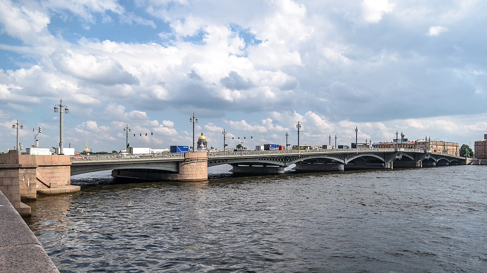
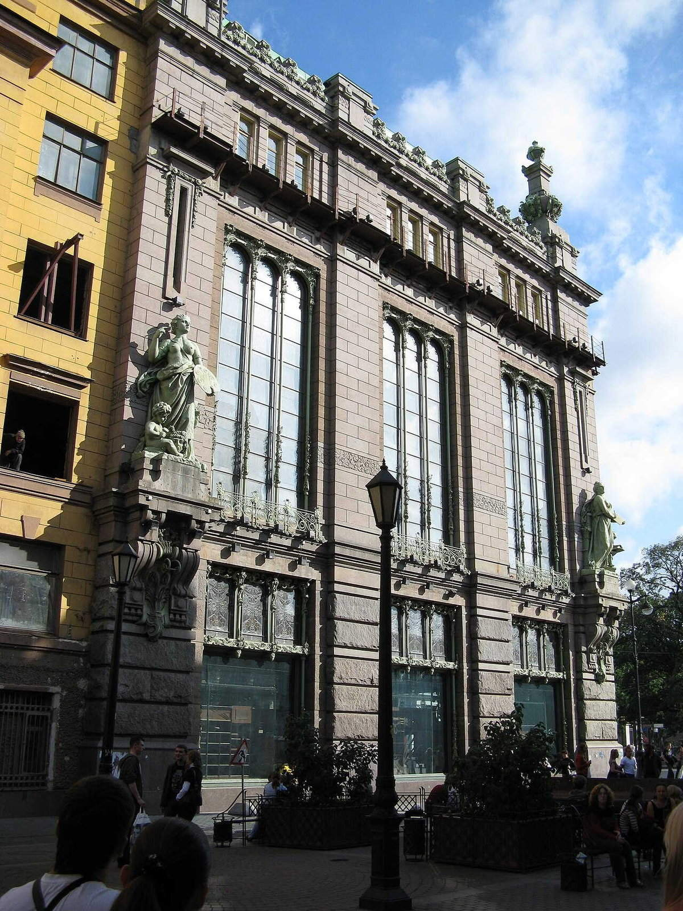
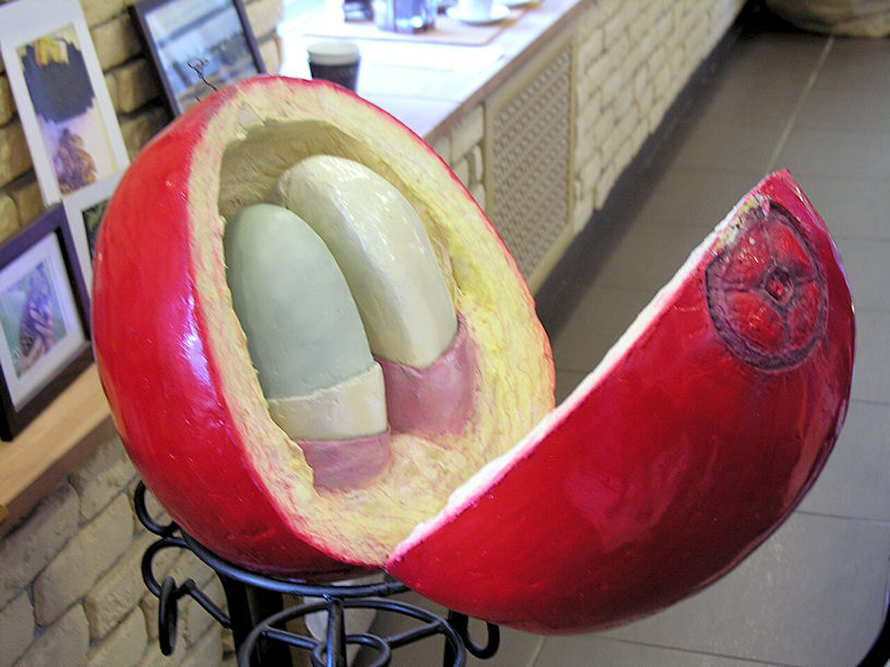
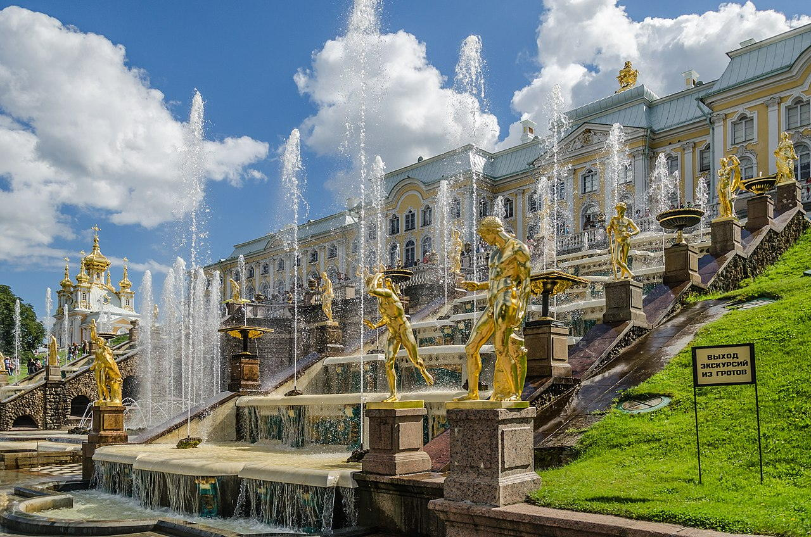
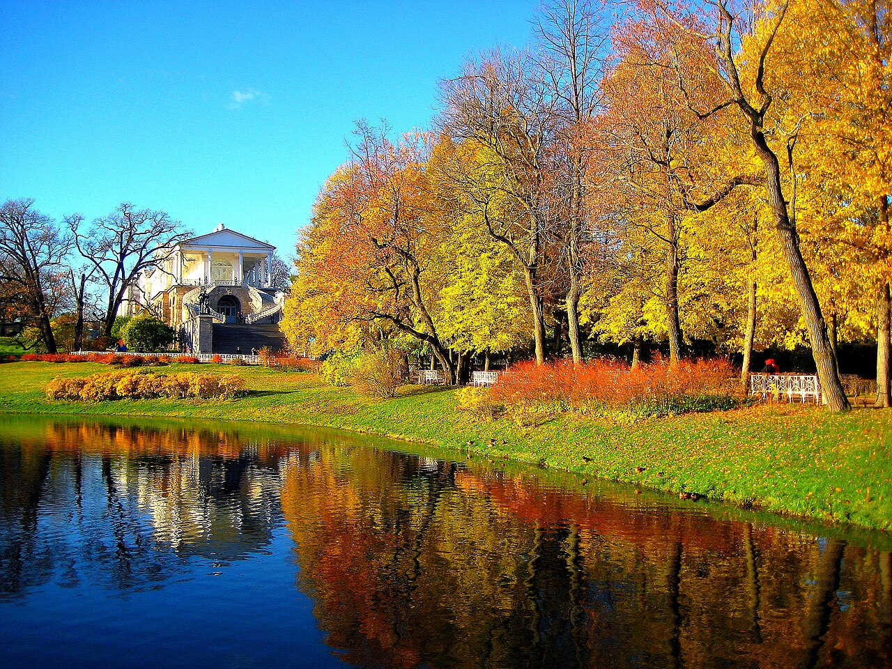
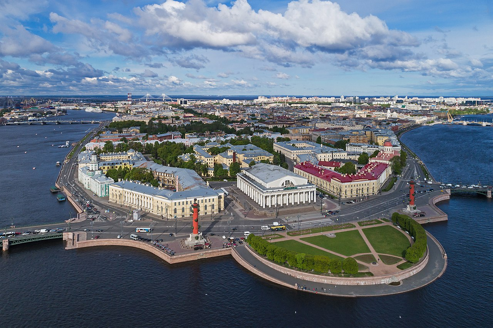
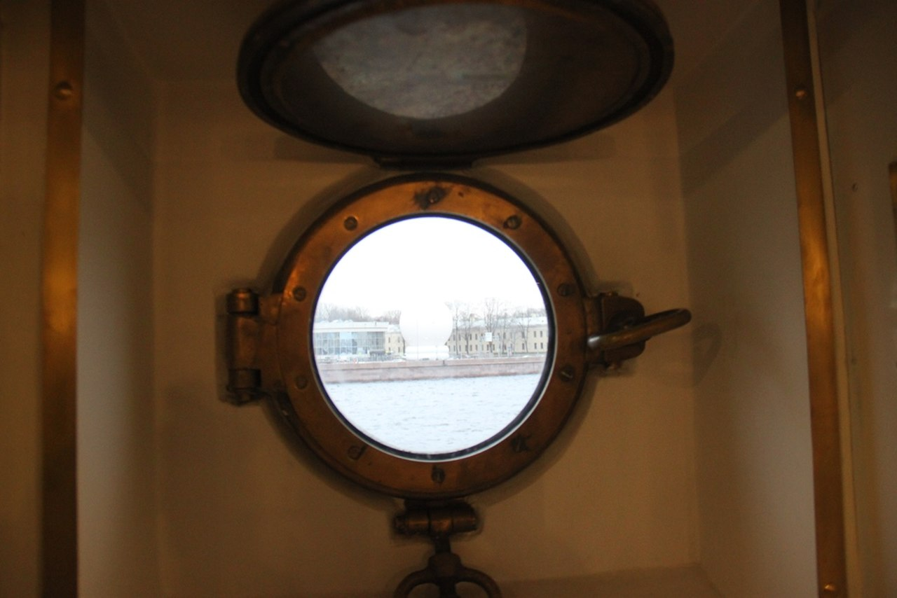
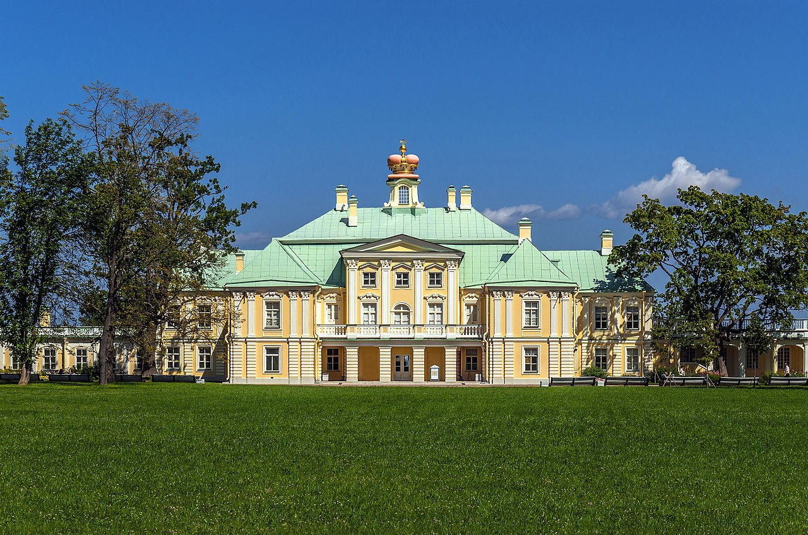
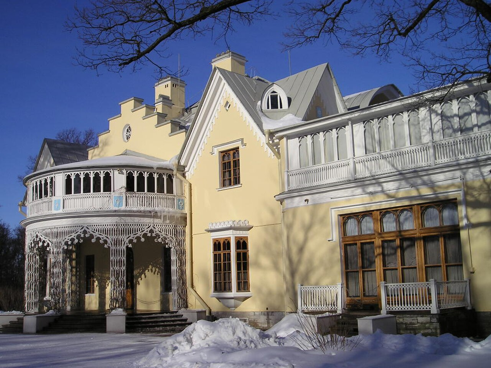
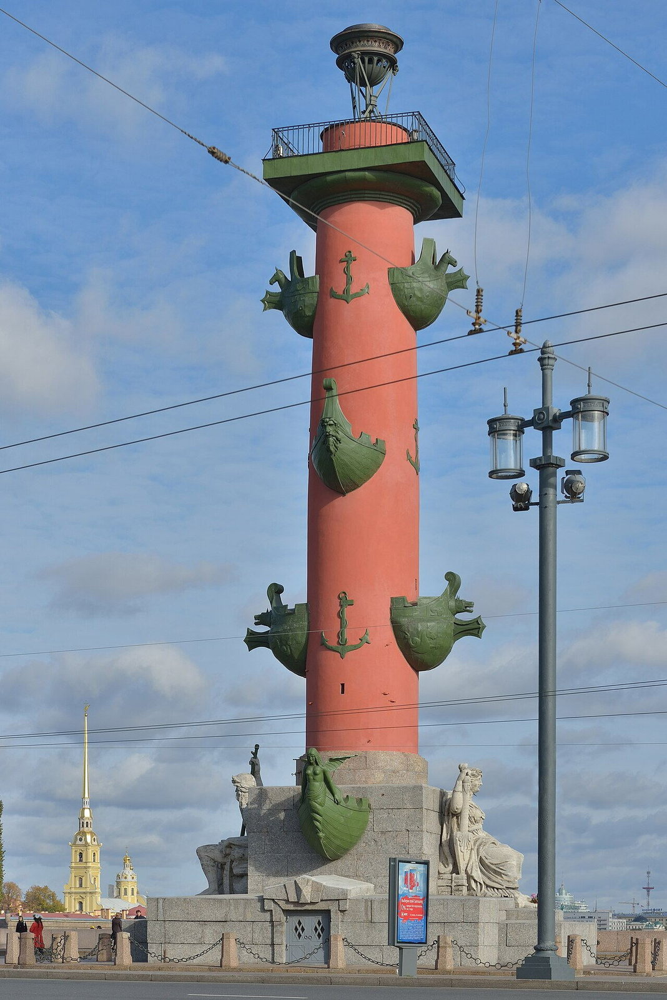

Historical and reference coats of arms


City of federal significance
City symbols (current coat of arms and flag)


Major universities of Saint Petersburg


Saint Petersburg
Guide. Places in this edition: 313.
OTIUM is the practice of meaningful leisure. In the classical tradition, otium is not time away from work but time when one returns to sight, memory, and thinking—without utilitarian goals, hurry, or pressure to produce a result.
We design routes not for ticking boxes but for staying present—not for consuming culture but for being inside it with attention.
OTIUM works with spaces where time thickens: architecture, sacred places, cinema, memory, landscape. We do not try to cover everything or promise a 'best of' list; we keep a small selection that survives silence and a second look.
OTIUM is neither a tour operator nor a service. It is an invitation to walk without obligation—to follow a route you can interrupt—to linger where the light asks for another minute.
OTIUM is for those who want to look slowly.
Historical and reference coats of arms
City of federal significance
City symbols (current coat of arms and flag)
Major universities of Saint Petersburg
Guide. Places in this edition: 313.
Saint Petersburg is Russia’s second-largest city and a Baltic seaport, long shaped as an imperial capital of culture and engineering.
Founded on the Neva marshes in 1703, it became the seat of tsars, a window on Europe, and a laboratory of urban form—from the regular Baroque grid to riverside ensembles and metro palaces. Today it balances heritage conservation with universities, theatres, and maritime traffic as the country’s “northern capital.”
The revolution of 1917 moved the capital to Moscow; the 1941–1944 siege became a symbol of endurance. After 1991 the city reclaimed its historic name, developing tourism, port traffic, and culture as a showcase of eighteenth- and nineteenth-century Russian heritage.
20 bridges
Аничков мост

Аничков мост расположен через канал Грибоедова в Санкт-Петербурге и соединяет Дворцовую площадь и Невский проспект. Построен в 1841–1842 годах архитектором Карлом Шинкелем по заказу императора Николая I. Изначально назывался Екатерининским, позже получил современное название в честь генерала Михаила Аничкова, участвовавшего в строительстве города. Мост знаменит своими скульптурами работы Ивана Теребенева, изображающими лошадей и всадников.
Популярный туристический объект, символ Санкт-Петербурга, место встреч и прогулок горожан.
Банковский мост

Банковский мост через реку Фонтанку соединяет набережную Лейтенанта Шмидта и улицу Рылеева. Построен в 1908–1909 годах по проекту инженера Владимира Бернгардта и архитектора Андрея Померанцева. Является первым разводным мостом Санкт-Петербурга, построенным специально для пешеходов.
Знаменит своей оригинальной архитектурой, выполненной в стиле модерн, украшен декоративными элементами и стал визитной карточкой Петербурга.
Благовещенский мост

Благовещенский мост соединяет Петроградскую сторону и центральную часть Санкт-Петербурга через реку Неву. Построен в 1903–1904 годах по проекту инженеров Г. Г. Кривошеина и Е. Е. Колоколова. Является первым металлическим мостом в городе и одним из символов дореволюционного Петербурга.
Символ дореволюционной инженерной мысли и архитектуры города.
Благовещенский мост

Гренадерский мост

Дворцовый мост

Дворцовый мост — один из символов Санкт-Петербурга, соединяющий Исаакиевскую площадь и Дворцовую набережную. Построен в 1916 году по проекту инженера Гюстава Эйфеля и архитектора Владимира Шервуда. Известен своей разводной конструкцией, позволяющей пропускать суда по Неве. В годы Великой Отечественной войны стал символом мужества ленинградцев, переживших блокаду.
Дворцовый мост является визитной карточкой города и обязательным пунктом посещения туристов.
Египетский мост

Исаакиевский мост

Исаакиевский мост соединяет Исаакиевскую площадь и Невский проспект в Санкт-Петербурге. Построен в середине XIX века по проекту архитектора А.П. Брюллова. Является одним из символов города и важной транспортной артерией исторического центра Петербурга.
Мост позволяет пешеходам легко перейти от Исаакиевской площади к Невскому проспекту, создавая живописную прогулочную зону вдоль реки Нева.
Итальянский мост

Кокушкин мост

Красный мост

Литейный мост

Литейный мост соединяет Литейный проспект и набережную реки Фонтанки в Санкт-Петербурге. Построен в 1876 году по проекту инженеров Николая Бенуа и Владимира Апышкова. Является первым металлическим подвесным мостом города и одним из старейших сохранившихся мостов Петербурга.
Символ исторического центра Северной столицы, место прогулок туристов и горожан.
Ломоносовский мост

Мост Александра Невского

Первый Инженерный мост

Пикалов мост

Синий мост

Старо-Калинкин мост

Троицкий мост

Троицкий мост через реку Неву соединяет Петроградскую сторону Санкт-Петербурга с центральным районом города. Построен в 1903–1904 годах по проекту инженеров Гербера и Нюстрема. Является одним из символов Северной столицы благодаря своей изящной конструкции и историческому значению.
Троицкий мост является визитной карточкой Санкт-Петербурга и одной из главных достопримечательностей города.
Тучков мост

26 buildings
Адмиралтейство

Адмиралтейство — исторический комплекс зданий в Санкт-Петербурге, построенный в XVIII веке по указу Петра I. Здесь размещалась главная база российского флота, отсюда начинались знаменитые морские походы и экспедиции. Комплекс включает Адмиралтейский собор, Адмиралтейские верфи и знаменитый шпиль с кораблём, ставший символом города.
Адмиралтейство — визитная карточка Санкт-Петербурга, символ морской мощи и величия русского флота.
БДТ им. Г. А. Товстоногова (здание)

Горный институт (корпус)

Дом Вавельберга

Дом Л. Н. Толстого

Дом Мурузи

Дом книги (Невский проспект)

Дом учёных РАН

Доходный дом П. И. Сузора

Елисеевский магазин (фасад)

Здание Биржи

Здание Санкт-Петербургской биржи было построено в конце XIX века по проекту архитектора Альфреда Парланда. Изначально оно служило центром экономической жизни города, здесь заключались важнейшие сделки и принимались важные решения. Здание стало символом финансовой мощи Петербурга и до сих пор привлекает внимание туристов своей величественной архитектурой.
Биржа является визитной карточкой Санкт-Петербурга и одним из главных символов деловой активности города.
Здание Главного штаба

Главное здание Государственного Эрмитажа и центральная постройка Дворцовой площади Санкт-Петербурга, возведённое в середине XIX века по проекту архитектора Карла Росси. Здание служило парадной резиденцией российских императоров и являлось символом величия Российской империи. Главная достопримечательность — роскошный фасад с колоннадой коринфского ордера и знаменитые часы с курантами над аркой Главного входа.
Главная архитектурная доминанта Дворцовой площади, визитная карточка Санкт-Петербурга и символ имперской мощи.
Здание Канцелярии проектов (Трезини)

Здание бывшей биржи (ракурс)

Здание филармонии (Невский, 30)

Императорский университет путей сообщения

Институт имени Репина

Малый драматический театр

Мариинский театр (новая сцена)

Политехнический университет (главный корпус)

Придворная певческая капелла (здание)

РГПУ им. А. И. Герцена

Санкт-Петербургская консерватория

Санкт-Петербургская консерватория основана в 1862 году по инициативе выдающегося композитора и педагога Николая Рубинштейна. Она стала первым профессиональным музыкальным учебным заведением в России и сыграла ключевую роль в развитии русской музыкальной культуры. Среди выпускников консерватории такие известные композиторы и исполнители, как Сергей Рахманинов, Дмитрий Шостакович и Владимир Спиваков.
Консерватория является одним из важнейших культурных центров Санкт-Петербурга и местом подготовки профессиональных музыкантов и педагогов.
Смольный институт

Торговый дом «Пассаж»

Университет ИТМО (корпус)

3 cafés
Елисеевский магазин

Елисеевский магазин был открыт в 1902 году купцом Петром Елисеевым и стал одним из первых крупных универсальных магазинов Санкт-Петербурга. В советское время здесь располагался знаменитый гастроном №1 города, славившийся своим богатым ассортиментом и изысканными деликатесами. Сегодня здание продолжает оставаться популярным местом среди туристов и горожан благодаря своей уникальной архитектуре и истории.
Здание Елисеевского магазина привлекает гостей возможностью насладиться атмосферой дореволюционного Петербурга и попробовать блюда высокой кухни.
Литературное кафе

Музей кофе

5 cemeteries
Богословское кладбище

Волковское лютеранское кладбище

Литераторские мостки

Пискарёвское мемориальное кладбище

Смоленское лютеранское кладбище

Смоленское лютеранское кладбище основано в конце XVIII века и является старейшим лютеранским кладбищем Санкт-Петербурга. Здесь нашли покой многие представители немецкой общины города, среди которых были известные купцы, промышленники и деятели культуры. Кладбище стало важным культурным памятником, отражающим историю петербургской немецкой диаспоры.
Кладбище представляет интерес для туристов и исследователей благодаря своей уникальной архитектуре и историческим захоронениям.
24 landmarks
Арка Новой Голландии

Новая Голландия — исторический район Санкт-Петербурга, расположенный между Адмиралтейским и Петроградским островами. В XVIII-XIX веках здесь располагались пороховые склады и верфи российского флота. Сегодня территория представляет собой культурный центр города с парком, музеями и арт-пространствами.
Главная достопримечательность района — Арка Новая Голландия, символизирующая историческое наследие и современное искусство Петербурга.
Большой каскад Петергофа

Большой каскад Петергофа — центральная достопримечательность дворцово-паркового ансамбля, построенная в середине XVIII века по указу императрицы Елизаветы Петровны. Это крупнейший фонтанный комплекс Европы, включающий более 60 скульптур и водных струй. Большой каскад был торжественно открыт в 1721 году во время визита французской королевы Марии Лещинской.
Большой каскад является визитной карточкой Петергофа и важнейшим элементом дворцового комплекса, символизирующим величие и мощь российского государства.
Дом Зингера

Здание Дома Зингера построено в конце XIX века по проекту архитектора Эмиля Шарлемана-Гюона. Это выдающийся образец эклектики, сочетающий элементы модерна и классицизма. Дом Зингера стал символом Санкт-Петербурга начала XX века и был известен своей уникальной архитектурой и роскошью интерьеров.
Дом Зингера привлекает туристов и жителей города благодаря своему уникальному архитектурному стилю и историческому значению.
Домик Петра I

Небольшой деревянный домик, построенный Петром I в 1703 году во время Северной войны, стал первым русским военным штабом и резиденцией царя. Расположен на территории Петропавловской крепости, именно отсюда Петр I руководил осадой шведских войск и строительством новой столицы — Санкт-Петербурга.
Это место стало символом начала строительства Санкт-Петербурга и зарождения российского флота.
Здание Эрмитажа (западный фасад)

Западный фасад здания Государственного Эрмитажа является одной из главных архитектурных доминант Санкт-Петербурга и важнейшим памятником архитектуры XVIII века. Здание было построено архитектором Антонио Ринальди в середине XVIII века по указу императрицы Елизаветы Петровны и предназначалось для размещения коллекций произведений искусства и предметов роскоши царской семьи. Западный фасад отличается строгими классическими формами и симметричной композицией, выполненными в стиле позднего барокко.
Западный фасад Эрмитажа привлекает туристов своей величественной архитектурой и служит визитной карточкой города.
Камеронова галерея (Царское Село)

Камеронова галерея — выдающееся произведение архитектуры эпохи классицизма, построенное в Царском Селе по указанию императрицы Екатерины II в конце XVIII века. Архитектор Чарльз Камерон воплотил здесь идеи античной гармонии и строгого порядка, создав уникальный интерьер, вдохновленный древнегреческими храмами и римскими виллами. Галерея служила местом отдыха царской семьи и гостей дворца, поражала современников своей роскошью и изысканностью.
Галерея привлекает туристов уникальной атмосферой классицизма и возможностью увидеть образцы искусства и декоративного убранства той эпохи.
Коломна (исторический район)

Коломна — исторический район Санкт-Петербурга, расположенный вдоль реки Невы между Адмиралтейским районом и Выборгским проспектом. Район возник в XVIII веке вокруг Коломенской набережной и стал популярным местом прогулок благодаря живописной набережной и близости к центру города. Здесь сохранились здания XIX века, отражающие архитектурную эпоху модерн.
Коломна привлекает туристов своей атмосферой спокойствия и ухоженности, сочетающей историческое наследие и уютные парки.
Лахта-центр

Лахта-центр — современное высотное здание в Санкт-Петербурге, построенное в стиле хай-тек. Расположено в районе Лахта на берегу Финского залива. Архитектурный комплекс включает офисные помещения, отель, смотровую площадку и торговые зоны. Здание стало символом новой городской архитектуры и визитной карточкой города.
Лахта-центр привлекает туристов уникальной архитектурой и панорамным видом на город и залив.
Маяк Толбухин

Московские триумфальные ворота

Триумфальные ворота были возведены в Санкт-Петербурге в 1834 году по проекту архитектора Осипа Бове в честь победы русской армии над Наполеоном в Отечественной войне 1812 года. Ворота стали символом национального героизма и сыграли важную роль в культурной жизни города, став местом торжественных мероприятий и парадов.
Триумфальные ворота являются одним из главных символов победы русского народа в Отечественной войне 1812 года и важным историческим памятником Петербурга.
Набережная Кутузова

Нарвские триумфальные ворота

Нарвские триумфальные ворота были возведены в Санкт-Петербурге в 1827–1834 годах по проекту архитектора Осипа Бове. Они служили памятником победам русской армии над Наполеоном в Отечественной войне 1812 года и Русско-турецкой войне 1828–1829 годов. Ворота стали символом военной славы и патриотизма, часто изображались художниками и фотографами XIX века.
Нарвские ворота являются одним из главных символов победы русского оружия и отражают дух эпохи романтизма и героизма.
Невские ворота Кронштадта

Невский проспект

Невский проспект — главная улица Санкт-Петербурга, заложенная в 1710 году по указу Петра I. Это одна из старейших магистралей города, проходящая от Адмиралтейства до Александро-Невской лавры. Здесь проходили важные исторические события, включая коронацию Александра II в 1856 году. Улица стала символом культурной жизни Петербурга благодаря многочисленным театрам, музеям и кафе.
Невский проспект — визитная карточка Санкт-Петербурга, место притяжения туристов и жителей города, где сочетаются культурное наследие и современная жизнь.
Никольские ворота Петропавловской крепости

Никольские ворота были построены в конце XVIII века и являются одним из старейших архитектурных сооружений Петропавловской крепости. Изначально ворота назывались Адмиралтейскими, позже переименованы в Никольские в честь иконы Николая Чудотворца, находящейся внутри крепости. Ворота служили главным входом в крепость до возведения Морских ворот.
Главная достопримечательность Петропавловской крепости, символ входа в исторический центр города.
Новая Голландия

Новая Голландия — исторический район Санкт-Петербурга, расположенный между Адмиралтейским каналом и рекой Невой. В XVIII веке здесь располагалась военная гавань и складские помещения российского флота. Сегодня Новая Голландия известна своим уникальным архитектурным ансамблем начала XX века, включающим несколько зданий в стиле модерн.
Здание Новой Голландии привлекает туристов живописной архитектурой и атмосферой исторического района города.
Петропавловская крепость

Петропавловская крепость была заложена в 1703 году по указу Петра I и стала первым каменным укреплением Санкт-Петербурга. Крепость сыграла ключевую роль в обороне города и служила важным стратегическим объектом во время Северной войны. Здесь также были захоронены многие выдающиеся деятели Российской империи, включая императора Павла I.
Петропавловская крепость является символом основания Санкт-Петербурга и важнейшим историческим памятником России.
Ростральные колонны

Ростральные колонны установлены в Санкт-Петербурге в 1840-х годах по проекту архитектора Андрея Штакеншнейдера. Изначально предназначались для обозначения входа в порт и служили маяком для судов. Колонны украшены рострами — носами захваченных кораблей, символизируя победы русского флота.
Ростральные колонны являются одним из символов Санкт-Петербурга и важной частью городского пейзажа, особенно впечатляющей на фоне Невы и отражающейся в её водах.
Смольный институт

Стадион «Петровский»

Стадион на Крестовском

Стадион на Крестовском острове был построен в конце XX века и стал главной ареной проведения матчей футбольного клуба «Зенит». Сооружение открылось в 2006 году после масштабной реконструкции и стало символом современной спортивной инфраструктуры Санкт-Петербурга. Стадион неоднократно принимал международные соревнования и матчи Кубка УЕФА.
Это главная спортивная арена города, где проходят важнейшие футбольные матчи и крупные спортивные мероприятия.
Стрелка Васильевского острова

Фонтан «Самсон» (Петергоф)

Фонтан «Самсон», расположенный в Петергофе, был построен в середине XVIII века по указу императрицы Екатерины II. Это один из главных символов дворцово-паркового ансамбля и символ победы русского народа над шведами в Северной войне. Фонтан изображает библейского Самсона, разрывающего пасть льва, и символизирует мощь и силу России.
Фонтан привлекает туристов своей величиной и скульптурной выразительностью, является визитной карточкой Петергофа и важнейшим элементом дворцового комплекса.
Форт Император Павел I

4 libraries
Библиотека РАН

Российская национальная библиотека

Российская национальная библиотека (РНБ) основана в 1862 году как Императорская публичная библиотека Санкт-Петербурга. Со временем она стала крупнейшим книжным хранилищем страны, собравшим миллионы экземпляров книг, журналов и рукописей. Сегодня РНБ играет важную роль культурного центра России, являясь местом научных исследований и просветительства.
Посещение библиотеки позволяет познакомиться с уникальными фондами, получить доступ к редким изданиям и стать частью культурной жизни города.
Российская национальная библиотека
Синодальная библиотека

8 markets
Андреевский рынок

Апраксин двор

Апраксин двор — исторический торговый комплекс Санкт-Петербурга, возникший ещё в XVII веке. Изначально здесь располагались торговые ряды, где торговали крестьяне прямо с возов («апраксами»). Со временем Апраксин двор стал крупнейшим торговым центром города, сохранив свою значимость до наших дней.
Это одно из старейших мест торговли в городе, привлекающее туристов своей атмосферой и уникальными магазинами.
Гостиный двор

Гостиный двор — историческое здание в Санкт-Петербурге, построенное в XVIII веке по указу императрицы Елизаветы Петровны. Изначально здесь располагались торговые ряды, где продавали товары различного назначения. Здание стало символом процветания города и важным торговым центром. Сегодня Гостиный двор привлекает туристов своей архитектурой и атмосферой старины.
Гостиный двор интересен своими архитектурными особенностями и исторической ценностью, отражающей развитие торговли и экономики Санкт-Петербурга.
Гостиный двор (фасад)

Дом Зингера (пассаж)

Елисеевский магазин (интерьер)

Кузнечный рынок

Сенной рынок

51 stations
Автово

Станция метро Автово открыта в 1944 году и является одной из старейших петербургских станций метрополитена. Она расположена недалеко от исторического района Автово, который возник ещё во времена Российской империи. Станция выделяется своей необычной архитектурой: стиль станции сочетает элементы сталинского ампира и конструктивизма, благодаря чему она выглядит особенно выразительно среди типовых станций той эпохи.
Автово интересна своими архитектурными особенностями и историческим значением как одна из первых станций ленинградского метрополитена.
Кировский завод

Кировский завод основан в 1725 году как Пушечный двор, позднее преобразованный в Адмиралтейские верфи. В советское время стал крупнейшим машиностроительным предприятием Ленинграда, сыгравшим ключевую роль в оборонной промышленности страны. Завод выпускал артиллерийские орудия, танки, бронемашины и другое военное оборудование.
Завод является важным историческим памятником промышленной архитектуры и символом индустриальной мощи Санкт-Петербурга.
Площадь Восстания

Площадь Восстания появилась в Санкт-Петербурге после революции 1917 года, когда прежняя площадь была переименована. С тех пор она стала одной из главных транспортных развязок города и местом значимых событий городской жизни. Здесь расположена одна из старейших станций петербургского метрополитена.
Станция метро Площадь Восстания является важной транспортной артерией города и популярным туристическим объектом благодаря своей исторической значимости и близости к основным достопримечательностям Петербурга.
Станция метро «Адмиралтейская»

Станция метро «Беговая»

Станция метро «Бухарестская»

Станция метро «Василеостровская»

Станция метро «Волковская»

Станция метро «Горьковская»

Станция метро «Гостиный двор»

Станция метро «Достоевская»

Станция метро «Дунайская»

Станция метро «Елизаровская»

Станция метро «Звёздная»

Станция метро «Зенит»

Станция метро «Крестовский остров»

Станция метро «Купчино»

Станция метро «Ладожская»

Станция метро «Лиговский проспект»

Станция метро «Маяковская»

Станция метро «Международная»

Станция метро «Московская»

Станция метро «Невский проспект»

Станция метро «Новочеркасская»

Станция метро «Обводный канал»

Станция метро «Озерки»

Станция метро «Парк Победы»

Станция метро «Парнас»

Станция метро «Петроградская»

Станция метро «Пионерская»

Станция метро «Площадь Александра Невского»

Станция метро «Площадь Восстания»

Станция метро «Приморская»

Станция метро «Пролетарская»

Станция метро «Проспект Большевиков»

Станция метро «Проспект Славы»

Станция метро «Пушкинская»

Станция метро «Рыбацкое»

Станция метро «Сенная площадь»

Станция метро «Спасская»

Станция метро «Спортивная»

Станция метро «Старая деревня»

Станция метро «Театральная»

Станция метро «Технологический институт»

Станция метро «Удельная»

Станция метро «Улица Дыбенко»

Станция метро «Фрунзенская»

Станция метро «Чкаловская»

Станция метро «Шушары»

Станция метро «Электросила»

Чернышевская

Станция метро Чернышевская открыта в 1985 году в составе первой очереди Ленинградского метрополитена. Названа в честь писателя Николая Гавриловича Чернышевского, автора романа «Что делать?». В оформлении станции использованы мозаичные панно, изображающие сцены из жизни писателя.
Посещение станции позволит познакомиться с историей Санкт-Петербурга через творчество известного писателя XIX века.
7 monasteries
Александро-Невская лавра

Александро-Невская лавра — крупнейший православный мужской монастырь Санкт-Петербурга, основанный в 1710 году Петром I после победы над шведами в Невской битве 1708 года. Лавра сыграла важную роль в культурной и духовной жизни города, здесь похоронены выдающиеся деятели науки, культуры и политики, включая императора Павла I и учёного Михаила Ломоносова.
Лавра привлекает паломников и туристов своей историей, архитектурой и атмосферой духовного покоя.
Воскресенский Новодевичий монастырь

Иоанновский монастырь

Казанский монастырь

Лавра Александра Невского

Подворье Леушинского монастыря (Иоанно-Богословская церковь)

Свято-Троицкая Сергиева Приморская пустынь

31 museums
Военно-исторический музей артиллерии

Музей был основан в 1918 году как Артиллерийский исторический музей Красной армии. Здесь собрана крупнейшая коллекция артиллерийского вооружения и военной техники с XVIII века до наших дней. Среди экспонатов есть уникальные образцы старинной пушки времен Петра I, орудия Великой Отечественной войны и современные системы вооружений.
Музей позволяет посетителям увидеть историю развития артиллерии и узнать больше о роли артиллерии в сражениях и войнах.
Зоологический музей РАН

Зоологический музей Российской академии наук был основан в 1832 году и является одним из старейших музеев естественной истории в России. Изначально располагался в Санкт-Петербурге, позднее переехал в Москву, где находится и сегодня. Музей хранит крупнейшую коллекцию животных и ископаемых, насчитывающую миллионы экспонатов.
Музей привлекает посетителей уникальной коллекцией редких видов животных и возможностью увидеть историю эволюции живого мира.
Зоологический сад (старый)

Институт русской литературы (Пушкинский Дом)

Институт русской литературы имени А.С. Пушкина, известный также как Пушкинский Дом, основан в 1918 году по инициативе выдающегося русского филолога академика Фёдора Ивановича Буслаева. Институт является ведущим научным центром страны, занимающимся изучением русской литературы от древнейших времён до современности. Среди известных деятелей института были такие учёные, как Юрий Лотман, Михаил Бахтин и Виктор Шкловский.
Это уникальное место, где хранятся редкие рукописи, архивы писателей и поэтов, проводятся научные исследования и организуются выставки, посвящённые русской литературе.
Каменный театр (история театра в СПб)

Крейсер «Аврора»

Крейсер «Аврора» был заложен в 1900 году и спущен на воду в 1903-м. В годы Первой мировой войны корабль участвовал в боевых действиях на Балтийском море, проявив себя в Цусимском сражении. Известность крейсер получил благодаря выстрелу, прозвучавшему утром 25 октября 1917 года во время Октябрьской революции в Петрограде, который стал сигналом к штурму Зимнего дворца.
«Аврора» является символом Октябрьской революции и важнейшим памятником российской истории и культуры.
Крейсер «Аврора»

Кунсткамера

Кунсткамера — музей антропологии и этнографии имени Петра Великого Российской академии наук, основанный Петром I в 1714 году. Изначально предназначалась для хранения необычных анатомических и этнографических экспонатов, собранных во время путешествий и экспедиций. Сегодня Кунсткамера является одним из старейших музеев Санкт-Петербурга и привлекает внимание туристов уникальными коллекциями, включая знаменитые анатомические препараты и этнографические артефакты.
Один из старейших и наиболее значимых музеев России, демонстрирующий разнообразие культур и народов мира.
Кунсткамера (зал)

Мраморный дворец (Русский музей)

Музей Анны Ахматовой

Музей Арктики и Антарктики

Музей Арктики и Антарктики основан в Ленинграде в 1980 году. Экспозиция рассказывает о научных исследованиях и экспедициях в полярные регионы мира. Среди знаковых фигур музея — выдающийся исследователь Арктики Владимир Русанов, чьё имя носит одна из улиц Санкт-Петербурга.
Познакомиться с историей освоения арктического и антарктического пространства, увидеть редкие экспонаты и фотографии экспедиций.
Музей Фаберже

Музей Фаберже основан в Санкт-Петербурге в 2004 году и посвящён творчеству знаменитого ювелира Карла Фаберже. Коллекция музея включает уникальные произведения искусства, созданные мастером и его учениками. Музей стал значимым культурным центром благодаря редким экспонатам, отражающим историю ювелирного дела конца XIX — начала XX века.
Музей позволяет глубже понять художественную ценность изделий Карла Фаберже и оценить мастерство российских мастеров.
Музей Эрарта

Эрарта — один из крупнейших музеев современного искусства России, основанный в 2004 году предпринимателем Сергеем Еремеевым. Изначально музей располагался в бывшем заводе «Красное Сормово», позже переехал в здание бывшего завода «Электроаппарат». В музее представлено около 6 тысяч произведений современных художников, среди которых работы Ильи Кабакова, Олега Кулика, Дмитрия Гутова и многих других.
Музей Эрарта является одним из ведущих культурных центров Санкт-Петербурга, где регулярно проходят выставки известных российских и зарубежных художников.
Музей антропологии и этнографии

Музей антропологии и этнографии основан в 1879 году при Императорском Санкт-Петербургском университете. Изначально назывался Музей Фёдора Петровича Литке, однако позже был переименован в Музей антропологии и этнографии имени Петра Великого Российской академии наук. Коллекция музея включает уникальные экспонаты, отражающие культурное наследие народов мира.
Это один из старейших музеев России, демонстрирующий богатство мировой культуры и традиций разных народов.
Музей водки

Музей городской скульптуры

Музей железных дорог России

Музей железных дорог России (Витебский вокзал)

Музей железных дорог России расположен в историческом здании Витебского вокзала Санкт-Петербурга, построенного в конце XIX века архитектором Карлом Шмидтом. Это один из старейших вокзалов города, который долгое время был важнейшим транспортным узлом Северо-Западного региона страны. В музее представлены уникальные экспонаты железнодорожной техники, модели поездов и железнодорожное оборудование различных эпох.
Музей позволяет познакомиться с историей развития железнодорожного транспорта в России и узнать больше о значении железных дорог в жизни страны.
Музей звуки

Музей космонавтики

Музей ледокола «Красин»

Музей обороны и блокады Ленинграда

Музей подводной лодки С-189

Подводная лодка С-189 была построена в СССР в 1964 году и служила в составе Северного флота до середины 1990-х годов. Она принимала участие в различных учениях и операциях, демонстрируя высокую надёжность и боевые качества советских подводных сил. Лодка известна своим участием в испытаниях новых образцов вооружения и техники.
Посещение музея позволяет узнать больше о роли подводных лодок в истории отечественного военно-морского флота и увидеть уникальные экспонаты времен холодной войны.
Музей политической истории России

Музей прикладного искусства Штиглица

Музей хлеба

Музей-дача Ленина в Разливе

Русский музей

Русский музей основан в 1898 году по инициативе императора Николая II и его жены Александры Фёдоровны. Изначально коллекция музея формировалась из собрания Эрмитажа и частных коллекций Романовых. Сегодня Русский музей является крупнейшим музеем русского искусства и хранит свыше 400 тысяч экспонатов, представляющих искусство России с древнейших времён до современности.
Русский музей — главный музей русской живописи и графики, где представлены шедевры от иконописи до авангарда.
Русский музей, Михайловский дворец

Центральный военно-морской музей

Центральный военно-морской музей основан в Санкт-Петербурге в 1864 году и является старейшим музеем российского флота. Музей хранит богатейшую коллекцию экспонатов, посвящённых истории отечественного военного мореплавания и морской славы России. Среди наиболее известных экспонатов музея — модели кораблей, оружие, личные вещи моряков и уникальные артефакты, отражающие героизм русских моряков в различных войнах и сражениях.
Музей позволяет посетителям глубже понять историю русского военно-морского флота и ощутить дух морских приключений и подвигов российских моряков.
31 palaces
Большой дворец Петергофа

Большой дворец Петергофа был построен в середине XVIII века по указу императрицы Елизаветы Петровны архитектором Франческо Бартоломео Растрелли. Это выдающийся образец русского барокко, символизирующий величие и мощь российского государства того времени. Дворец славится своей уникальной архитектурой, пышной отделкой интерьеров и великолепными парками, которые поражают воображение посетителей до сих пор.
Большой дворец является визитной карточкой Петергофа и важнейшим памятником русской архитектуры XVIII века, демонстрирующим высокий уровень мастерства русских зодчих и инженеров.
Владимирский дворец

Гатчинский дворец

Гатчинский дворец был построен в XVIII веке по указу императрицы Екатерины II. Изначально задумывался как охотничий замок, позже стал одной из резиденций российских монархов. Среди запоминающихся фактов стоит отметить, что именно здесь Петр III впервые встретился с будущей женой Екатериной Великой.
Гатчинский дворец привлекает туристов уникальной архитектурой и историей, отражающей эпоху правления русских царей.
Дворец Белосельских-Белозерских

Дворец Марли (Петергоф)

Марли дворец был построен в Петергофе в середине XVIII века по указу императрицы Елизаветы Петровны архитектором Франческо Бартоломео Растрелли. Изначально задумывался как загородная резиденция для отдыха царской семьи, позже стал частью парадной дворцовой зоны Петергофа. Известен своими роскошными интерьерами и садово-парковым ансамблем, гармонично вписавшимся в природный ландшафт.
Знаменит своим великолепием и уникальной гармонией архитектуры и природы, является одной из жемчужин русского барокко.
Дворец Меншикова

Дворец Меншикова был построен в середине XVIII века по проекту выдающегося русского архитектора Франческо Бартоломео Растрелли для князя Александра Меншикова, ближайшего сподвижника Петра I. Здание стало символом эпохи петровских преобразований и ярким примером барочной архитектуры Санкт-Петербурга. Дворец знаменит своими пышными интерьерами, величественными залами и уникальными декоративными элементами.
Дворец Меншикова привлекает туристов своей уникальной архитектурой, богатой историей и атмосферой петровской эпохи.
Дворец Меншикова (Ораниенбаум)

Дворец Меншикова расположен в Ораниенбауме, бывшем пригороде Санкт-Петербурга. Построен в середине XVIII века по указу Петра I для князя Александра Меншикова, ближайшего сподвижника императора. Здание сочетает элементы барокко и классицизма, отражая эпоху расцвета русского искусства и архитектуры эпохи Просвещения.
Дворец является выдающимся памятником русской культуры и архитектуры, воплощением стиля петровского барокко и важным историческим объектом, связанным с развитием Петербурга и историей России.
Дворец Меншикова (Ораниенбаум)

Дворец Монплезир (Петергоф)

Дворец Монплезир расположен в Петергофе и является одной из главных достопримечательностей дворцово-паркового ансамбля. Построенный в середине XVIII века по указу Петра I, дворец служил летней резиденцией русских императоров. Особенностью здания является необычная архитектура, сочетающая элементы классицизма и барокко, а также живописная обстановка парка с фонтанами и каскадами воды, спроектированная Андреем Никифоровичем Воронихиным.
Монплезир привлекает туристов своей уникальной архитектурой и живописной парковой зоной, где расположены знаменитые фонтаны и каскады Петергофа.
Дворец Строгановых

Дворец Строгановых — историческое здание XVIII века, расположенное в Санкт-Петербурге на набережной реки Фонтанки. Построенный в стиле позднего барокко, дворец был возведён по заказу купцов Строгановых, известных меценатов и благотворителей своего времени. Здание отличается изысканным фасадом и богатыми интерьерами, украшенными живописью и скульптурами. Дворец долгое время служил резиденцией представителей знатной семьи Строгановых и является памятником архитектуры федерального значения.
Значение дворца заключается в сохранении исторического облика города и отражении культурного наследия эпохи Просвещения.
Дворец Строгановых (фасад)

Дворец Шереметева на Фонтанке

Дворец Шереметевых на Фонтанке построен в конце XVIII века и принадлежал представителям знатной дворянской фамилии Шереметевых. В разные годы дворец служил резиденцией различных владельцев, среди которых были граф Алексей Григорьевич Шереметев и его потомки. Здание отличается богатым внутренним убранством и архитектурными элементами, отражающими стиль позднего классицизма.
Здание дворца привлекает внимание туристов своей историей, архитектурой и уникальной атмосферой эпохи дворцовых интерьеров.
Дворец Юсуповых

Дворец Юсуповых — бывшая резиденция князей Юсуповых, одна из знаковых архитектурных достопримечательностей Санкт-Петербурга. Построенный в конце XIX века архитектором Владиславом Городецким, дворец сочетает элементы модерна и эклектики. Здание стало символом роскоши и величия династии Юсуповых, известных меценатов и коллекционеров искусства.
Здание дворца привлекает туристов своей уникальной архитектурой и историей, связанной с одной из влиятельных семей России.
Дворец-коттедж (Петергоф)

Екатерининский дворец

Екатерининский дворец расположен в Царском Селе и является одним из крупнейших дворцовых комплексов России. Построенный в XVIII веке по указу императрицы Екатерины II, дворец служил летней резиденцией русских монархов. Здесь проходили важные государственные мероприятия и приемы иностранных послов. Дворец знаменит своей архитектурой и богатством внутреннего убранства, включая знаменитые Янтарную комнату.
Екатерининский дворец привлекает туристов уникальной архитектурой и историей, связанной с великими правителями России.
Елагиноостровский дворец

Елагиноостровский дворец расположен на территории Елагина острова в Санкт-Петербурге. Построен в XVIII веке архитектором Францем Бланком по заказу императрицы Екатерины II. В разное время здесь жили представители знатных российских семей, включая императора Павла I и его супругу императрицу Марию Фёдоровну. Дворец знаменит своими роскошными интерьерами и садово-парковым ансамблем, который включает живописные пруды и аллеи.
Дворец привлекает туристов своей уникальной атмосферой старины и красотой архитектурных решений, позволяющих погрузиться в историю русского дворянства.
Зимний дворец

Зимний дворец — официальная резиденция российских императоров с XVIII века до революции 1917 года. Здание построено в стиле классицизма по проекту архитектора Бартоломео Растрелли в середине XVIII века. Дворец стал символом имперской власти и роскоши, здесь проходили важные государственные церемонии и приёмы иностранных послов.
Это один из главных символов Санкт-Петербурга и российского государства, место, где жили и правили российские императоры.
Каменноостровский дворец

Каменноостровский дворец расположен на Каменной улице Санкт-Петербурга и является памятником архитектуры начала XX века. Построенный в 1911–1914 годах архитектором Э.Э. Рербергом по заказу купца Николая Михайловича Второва, дворец изначально задумывался как частная резиденция. После революции 1917 года здание было национализировано и использовалось различными учреждениями, включая Государственный литературный музей имени А.С. Пушкина. Сегодня дворец открыт для посетителей как музей.
Дворец интересен своей уникальной архитектурой и историей, связанной с известными личностями Серебряного века.
Кикины палаты

Китайский дворец (Ораниенбаум)

Китайский дворец в Ораниенбауме был построен в середине XVIII века по указу императрицы Елизаветы Петровны архитектором Францем Бланком. Здание выполнено в стиле русского барокко и предназначалось для отдыха царской семьи. Дворец знаменит своей уникальной архитектурой и живописной обстановкой интерьеров, выполненных лучшими мастерами своего времени.
Дворец привлекает туристов роскошью внутреннего убранства и историческим значением, отражающим эпоху расцвета российского искусства и культуры.
Константиновский дворец (Стрельна)

Константиновский дворец расположен в Стрельне и является одним из крупнейших дворцовых комплексов Санкт-Петербурга. Построен в XVIII веке по указу императрицы Елизаветы Петровны в стиле русского барокко архитектором Франческо Бартоломео Растрелли. Изначально предназначался для проживания наследника престола, великого князя Константина Павловича, отсюда и название дворца. В годы Великой Отечественной войны здание сильно пострадало от бомбардировок, однако после войны было восстановлено и открыто для посещения туристов.
Дворец привлекает внимание гостей благодаря уникальной архитектуре, роскошной отделке интерьеров и богатой истории, связанной с великими правителями России.
Коттедж в Александрии (Петергоф)

Коттедж в Александрии расположен рядом с дворцом Петергофа и является одним из живописных усадебных домов комплекса Петергофских парков. Построен в первой половине XIX века архитектором Карлом Росси, известным также своими работами в Санкт-Петербурге и Павловске. Особенностью коттеджа является его гармоничное сочетание с природной средой и изысканный декор фасадов.
Здание привлекает внимание туристов своей уникальной архитектурой и живописным расположением среди зелёных насаждений парка Александрия.
Мариинский дворец

Михайловский замок

Михайловский замок был построен в конце XVIII века по указу императора Павла I в качестве личной резиденции будущего императора Александра I. Замок стал символом новой эпохи русского классицизма и сыграл важную роль в жизни царской семьи. Особенностью замка является его строгий фасад и гармоничное сочетание архитектуры французского классицизма с элементами русской крепостной архитектуры.
Замок привлекает туристов своей уникальной архитектурой и историей, связанной с судьбой императорской семьи.
Мраморный дворец

Мраморный дворец был построен в середине XIX века по проекту архитектора Августина Вебера для великой княгини Елены Павловны, супруги императора Николая I. Сооружение выполнено в стиле позднего классицизма и отличается изысканной отделкой мрамором, откуда и произошло название дворца. Здание стало символом элегантности и величия петербургской архитектуры эпохи правления династии Романовых.
Здание привлекает туристов своей уникальной архитектурой, роскошной внутренней отделкой и живописными интерьерами, выполненными знаменитыми художниками и мастерами своего времени.
Николаевский дворец

Николаевский дворец был построен в конце XIX века по проекту архитектора Альфреда Парланда и стал резиденцией Николая II и его семьи до революции 1917 года. Здесь проходили важные государственные мероприятия и встречи царской семьи с приближёнными. Запоминающийся факт — именно отсюда Николай II отправился в ссылку после отречения от престола.
Значение Николаевского дворца заключается в его роли резиденции последнего российского императора и важном историческом контексте начала XX века.
Новый Михайловский дворец

Павловский дворец

Павловский дворец расположен в живописной местности Павловска близ Санкт-Петербурга и является одним из крупнейших дворцово-парковых ансамблей России. Построенный в конце XVIII века по указу императрицы Екатерины II, он служил летней резиденцией русских монархов. Архитектор Чарльз Камерон создал уникальное здание в стиле классицизма, отличающееся гармоничностью пропорций и строгими линиями фасадов.
Павловский дворец привлекает туристов своей изысканной архитектурой, роскошью интерьеров и великолепием парка с множеством скульптур и памятников.
Приоратский дворец

Таврический дворец

Таврический дворец был построен в конце XVIII века по проекту архитектора Андрея Воронихина. Изначально здание предназначалось для размещения Сената Российской империи, однако позже стало использоваться как резиденция императора Павла I и императрицы Марии Федоровны. Дворец знаменит своими величественными интерьерами и живописной архитектурой классицизма.
Здание привлекает туристов своей уникальной архитектурой и историческим значением, связанным с ключевыми событиями российской истории.
Фермерский дворец (Петергоф)

12 parks
Александровский парк (Царское Село)

Английский парк (Гатчина)

Екатерининский парк (Царское Село)

Екатерининский парк в Царском Селе был заложен в XVIII веке по указу императрицы Екатерины II и стал одним из крупнейших пейзажных парков России. Здесь гармонично сочетаются природные ландшафты и архитектурные сооружения эпохи классицизма. Парк знаменит своими живописными аллеями, прудами и павильонами, многие из которых были созданы известными архитекторами и художниками своего времени.
Парк является выдающимся образцом русского садово-паркового искусства и важным памятником истории и культуры России.
Летний сад

Летний сад — старейший парк Санкт-Петербурга, заложенный в 1704 году по указу Петра I. Изначально задумывался как место отдыха царской семьи и иностранных послов во время официальных приемов. Со временем стал любимым местом прогулок горожан и императорской семьи. В Летнем саду сохранились уникальные скульптуры XVIII века, созданные итальянскими мастерами, среди которых знаменитая статуя Амура работы Антонио Кановы.
Летний сад — символ культурной жизни Петербурга и одно из главных мест притяжения туристов и жителей города благодаря своей истории и живописной архитектуре.
Марсово поле

Марсово поле — исторический парк в Санкт-Петербурге, расположенный между Адмиралтейством и Петропавловской крепостью. Изначально предназначалось для военных смотров и парадов русской армии. Здесь проходили важные государственные мероприятия, включая коронационные шествия и военные учения. Сегодня Марсово поле является популярным местом отдыха горожан и туристов, сохранив свою историческую значимость.
Марсово поле — символ исторической значимости Санкт-Петербурга и место проведения значимых государственных событий.
Михайловский сад

Михайловский сад расположен рядом с Михайловским дворцом, построенным по проекту архитектора Карла Росси в первой четверти XIX века. Изначально территория предназначалась для прогулок членов императорской семьи и высших чиновников Петербурга. В саду сохранились уникальные деревья и кустарники, высаженные ещё в XVIII веке.
Сад является частью ансамбля Михайловского дворца и входит в список объектов культурного наследия федерального значения.
Парк 300-летия Санкт-Петербурга

Парк 300-летия Санкт-Петербурга заложен в честь празднования трёхсотлетия основания города в 1703 году. Парк расположен в историческом центре города рядом с Петропавловской крепостью и является одной из главных городских достопримечательностей. Здесь регулярно проводятся культурные мероприятия и концерты классической музыки.
Это место позволяет ощутить дух исторического Санкт-Петербурга и насладиться живописной природой в самом сердце мегаполиса.
Парк Александрия (Петергоф)

Парк Сильвия (Гатчина)

Сад Аполлона

Сад дворца Юсуповых

ЦПКиО им. Кирова

37 temples
Андреевский собор

Армянская церковь

Благовещенская церковь

Благовещенская церковь (Васильевский остров)

Владимирский собор

Владимирский собор был построен в середине XIX века по проекту архитектора Андрея Попова и освящён в 1860 году. Это один из крупнейших соборов Санкт-Петербурга, возведённый в память о восшествии на престол императора Александра II после трагического покушения. Собор стал важным местом проведения торжественных мероприятий и народных празднеств, символизируя единство народа и государя.
Владимирский собор привлекает туристов своей величественной архитектурой и историческим значением, являясь символом царской эпохи и единства власти и народа.
Воскресенский Новодевичий монастырь (собор)

Воскресенский Смольный собор

Евангелическо-лютеранская церковь Святой Екатерины

Исаакиевский собор

Исаакиевский собор — выдающийся православный храм Санкт-Петербурга, построенный в середине XIX века по проекту архитектора Огюста Монферрана. Собор стал символом города благодаря своему величественному внешнему облику и уникальному интерьеру, украшенному мрамором, бронзовыми статуями и мозаиками. В годы советской власти здесь размещался музей, после реставрации в соборе вновь проводятся богослужения.
Исаакиевский собор привлекает туристов своей архитектурой и историческим значением, является одной из главных достопримечательностей Северной столицы.
Казанский собор

Казанский собор — главный православный храм Санкт-Петербурга, возведённый в честь Казанской иконы Божьей Матери. Построен в конце XVIII века по указу императрицы Екатерины II после победы над Наполеоном в Отечественной войне 1812 года. Собор стал символом мужества русского народа и веры в победу.
Казанский собор привлекает паломников и туристов своей архитектурой и историей, связанной с ключевыми событиями русской истории.
Костёл Святой Екатерины

Лютеранская церковь Святых Петра и Павла

Лютеранская церковь святой Екатерины

Морской Никольский собор (Кронштадт)

Морской Никольский собор расположен в Кронштадте и является одним из главных символов города. Построенный в конце XIX века по проекту архитектора Андрея Николаевича Померанцева, храм был освящён в честь святого Николая Чудотворца, покровителя моряков и путешественников. Собор стал важным местом паломничества и духовной жизни горожан, особенно во время военных действий и морских походов.
Собор привлекает туристов своей уникальной архитектурой и историческим значением, являясь символом мужества и стойкости кронштадтцев.
Морской Никольский собор (Кронштадт)

Николо-Морской собор

Петропавловский собор

Петропавловский собор — главный храм Санкт-Петербурга, заложенный в 1703 году Петром I в честь победы над шведами в Полтавской битве. Собор стал символом основания города и долгое время оставался кафедральным собором столицы Российской империи. В соборе захоронены многие выдающиеся деятели страны, включая Петра I.
Знаменитый памятник архитектуры и место паломничества верующих, Петропавловский собор является одним из главных символов Петербурга.
Сампсониевский собор

Санкт-Петербургская мечеть

Санкт-Петербургская мечеть была построена в 2004 году на месте разрушенной Первой петербургской мечети, открытой ещё в XIX веке. Это одна из крупнейших мусульманских святынь Северной столицы, символизирующая культурное многообразие города.
Мечеть привлекает туристов своей архитектурой и возможностью познакомиться с исламской культурой Петербурга.
Свято-Троицкий собор Александро-Невской лавры

Смольный собор

Смольный собор — православный храм в Санкт-Петербурге, построенный в середине XIX века по проекту архитектора Альфреда Парланда. Собор расположен рядом со Смольным институтом благородных девиц, отсюда и название. В советское время здание использовалось под различные учреждения, включая архив и музей. Сегодня здесь располагается Музей истории Петербурга.
Здание собора привлекает туристов своей архитектурой и историческим значением, являясь важной частью культурного наследия города.
Собор Владимирской иконы Божией Матери

Собор князя Владимира

Спас на Крови

Спас на Крови построен на месте трагической гибели императора Александра II в 1881 году. Храм возведён в память о царе-реформаторе и стал символом стойкости российского народа перед лицом трагедии. Здание сочетает элементы неорусского стиля, византийской архитектуры и модерна.
Храм привлекает туристов своей уникальной архитектурой и историей, связанной с императорской семьей.
Спасо-Преображенский собор

Спасо-Преображенский собор — главный православный храм Санкт-Петербурга, построенный в конце XVIII века по указу императрицы Екатерины II. Собор был возведён архитектором Антонио Ринальди в стиле барокко и стал одним из символов города благодаря своему величественному внешнему виду и богатству внутреннего убранства. Здесь проходили важнейшие церковные церемонии и коронационные службы российских монархов.
Спасо-Преображенский собор является значимым историческим памятником и важным духовным центром Санкт-Петербурга.
Троицкий собор Измайловского полка

Феодоровский собор

Финская лютеранская церковь

Храм Спаса-на-Водах

Церковь Спаса Преображения

Церковь св. Екатерины

Церковь святой Елизаветы

Церковь святой Марии

Церковь святой Татианы

Церковь святых Кирилла и Мефодия

Часовня святой Ксении

Чесменская церковь

Чесменская церковь расположена в историческом районе Чесменка Санкт-Петербурга и является памятником архитектуры конца XVIII века. Построена в стиле русского барокко по указу императрицы Елизаветы Петровны в честь победы русской армии над турками в битве при Чесме в 1770 году. Церковь известна своей оригинальной архитектурой и богатым внутренним убранством, выполненным в традициях русского классицизма.
Церковь привлекает туристов уникальной архитектурой и историей, связанной с ключевыми событиями русской истории XVIII века.
5 stations
Балтийский вокзал

Балтийский вокзал (ныне Московский вокзал Санкт-Петербурга) был открыт в 1849 году и стал первым железнодорожным вокзалом города. Со временем здание сильно изменилось, пережив несколько реконструкций и ремонтов, последняя из которых произошла в конце XX века. Вокзал сыграл ключевую роль в развитии железнодорожного транспорта России и стал символом начала эпохи массовых пассажирских перевозок.
Здание Московского вокзала является памятником архитектуры XIX века и важной исторической достопримечательностью Санкт-Петербурга, отражающей развитие железнодорожной инфраструктуры страны.
Витебский вокзал

Витебский вокзал был построен в 1904 году по проекту архитектора Льва Кекушева в стиле модерн. Вокзал стал одним из первых крупных железнодорожных сооружений Санкт-Петербурга и долгое время оставался главным железнодорожным узлом города, обеспечивая пассажирские перевозки в направлении Витебска и других регионов северо-запада России.
Витебский вокзал является важной исторической достопримечательностью Санкт-Петербурга и популярным местом для путешественников благодаря своему уникальному архитектурному стилю и значимой роли в истории железнодорожного транспорта города.
Ладожский вокзал

Ладожский вокзал Санкт-Петербурга был открыт в 1941 году взамен разрушенного во время Великой Отечественной войны старого здания Финляндского вокзала. Сооружение стало важной транспортной артерией города, обеспечивающей пассажирские перевозки через Ладогу. Здание отличается лаконичностью форм и строгими архитектурными линиями, символизируя стойкость и мужество жителей блокадного Ленинграда.
Ладожский вокзал является памятником архитектуры и символом мужества ленинградцев времен блокады.
Московский вокзал

Московский вокзал — главный железнодорожный узел Санкт-Петербурга, построенный в конце XIX века. Сооружение открылось в 1874 году и стало важнейшей транспортной артерией города, обеспечивающей связь между северной столицей и европейской частью России. Вокзал стал символом эпохи индустриализации и сыграл ключевую роль в развитии инфраструктуры региона.
Московский вокзал — визитная карточка Санкт-Петербурга, важный транспортный узел и популярное место встреч туристов и горожан.
Финляндский вокзал

Финляндский вокзал был открыт в 1874 году и стал первым крупным железнодорожным узлом Санкт-Петербурга после строительства Николаевской железной дороги. Со временем здание стало визитной карточкой города благодаря архитектуре в стиле эклектика и символическому значению для жителей Северной столицы. Здесь начинались знаменитые путешествия Александра Блока и Анны Ахматовой, а также многие другие литературные герои русских писателей вдохновлялись поездками через этот вокзал.
Финляндский вокзал является важнейшим транспортным узлом Санкт-Петербурга и символом русской железнодорожной культуры.
30 sculptures and monuments
Александрийский столп

Александрийский столп, также известный как Александровская колонна, воздвигнутый в Санкт-Петербурге по указу императора Николая I в 1834 году архитектором Огюстеном Монферраном. Колонна посвящена победе русского оружия над Наполеоном в Отечественной войне 1812 года. Это одно из главных символов города, олицетворение величия империи и её военной мощи.
Александровская колонна привлекает туристов своей монументальностью и исторической значимостью, является визитной карточкой Петербурга.
Грифоны Банковского моста

Квартал со сфинксами

Кони Аничкова моста

Львиный мостик

Медный всадник

Памятник Петру I работы скульптора Этьена Мориса Фальконе был установлен в Санкт-Петербурге в 1768–1782 годах по указу императрицы Екатерины II. Монумент символизирует мощь и величие Петра Великого, основателя города. Известен также благодаря одноимённой поэме Александра Пушкина, где памятник становится метафорой судьбы Петербурга и его жителей.
Главный символ Санкт-Петербурга, воплощение мощи и славы Петра I.
Медный всадник (ракурс)

Монумент героическим защитникам Ленинграда

Памятник А. В. Суворову (у Троицкого моста)

Памятник А. И. Герцену

Памятник А. М. Горькому

Памятник А. Н. Радищеву

Памятник А. С. Грибоедову

Памятник А. С. Пушкину (Пушкинская улица)

Памятник В. В. Маяковскому

Памятник В. Г. Белинскому

Памятник Глинке

Памятник Екатерине II

Памятник И. С. Никитину

Памятник Крылову

Памятник Ломоносову

Памятник М. Е. Салтыкову-Щедрину

Памятник М. Ю. Лермонтову

Памятник Н. А. Добролюбову

Памятник Н. А. Некрасову

Памятник Николаю I

Памятник Николаю I установлен в Санкт-Петербурге в 1859 году скульптором Михаилом Микешиным. Император Николай I правил страной с 1825 по 1855 год и запомнился строгими реформами и укреплением бюрократического аппарата. Памятник стал одним из символов эпохи николаевского правления.
Памятник Николая I привлекает внимание туристов благодаря своей исторической значимости и уникальному облику.
Памятник Пушкину (пл. Искусств)

Памятник Чижику-Пыжику

Ростральная колонна (деталь)

Скульптура Афины (Петровские ворота)

6 squares
Дворцовая площадь

Дворцовая площадь возникла в XVIII веке в Санкт-Петербурге во время правления императрицы Елизаветы Петровны. Изначально называлась Адмиралтейской площадью, позже получила название Дворцовой после возведения Зимнего дворца. Площадь играла ключевую роль в жизни города, здесь проходили торжественные церемонии, парады и государственные мероприятия. Одним из запоминающихся событий стало открытие Александровской колонны в честь победы над Наполеоном.
Дворцовая площадь является сердцем исторического центра Санкт-Петербурга и символом величия российского государства.
Исаакиевская площадь

Исаакиевская площадь возникла в середине XIX века на месте разрушенной части Исаакиевского собора после завершения строительства самого собора. Это центральная площадь Санкт-Петербурга, связывающая Невский проспект с Исаакиевским собором и Дворцовой площадью. Здесь проходили важные государственные мероприятия и народные гуляния.
Одна из главных площадей города, место значимых исторических событий и народных празднеств.
Михайловская площадь

Площадь Декабристов

Площадь Декабристов возникла в середине XIX века после перепланировки городской застройки. Названа она была в честь участников декабрьского восстания 1825 года, чьи идеи вдохновили многих петербургских революционеров. Здесь проходили массовые митинги и собрания политических организаций начала XX века.
Площадь привлекает туристов атмосферой исторического центра города и возможностью увидеть архитектурные памятники конца XIX — начала XX веков.
Площадь Искусств

Площадь Островского

9 theatres
Александринский театр

Александринский театр основан в 1756 году как первый постоянный драматический театр России. Театр сыграл ключевую роль в культурной жизни страны, став символом русской театральной школы и местом премьер многих знаменитых постановок. Здесь выступали такие великие актеры, как Михаил Щепкин и Михаил Чехов.
Это один из старейших театров России, визитная карточка Санкт-Петербурга и место проведения значимых культурных событий.
БДТ им. Товстоногова

МДТ Европейский

Мариинский театр

Мариинский театр основан в 1860 году как частный оперный театр братьев Бергманов. В 1870 году стал императорским театром и получил название Мариинского в честь императрицы Марии Александровны. Театр пережил революционные годы и Гражданскую войну, сохранив свою культурную значимость. Сегодня является одним из ведущих мировых театральных центров.
Это один из главных культурных символов Санкт-Петербурга, известный своими уникальными постановками оперы, балета и драматического театра.
Мариинский театр (новая сцена)

Мариинский театр (новая сцена) расположен в Санкт-Петербурге и является филиалом знаменитого Большого театра России. Открыт в 2006 году после масштабной реконструкции исторического здания Мариинского театра, разрушенного во время Великой Отечественной войны. Новая сцена предназначена для современных постановок и экспериментов, отражающих актуальные тенденции мировой театральной сцены.
Новая сцена позволяет зрителям знакомиться с современными театральными экспериментами и новыми направлениями в искусстве.
Михайловский театр

Михайловский театр был основан в Санкт-Петербурге в 1864 году по инициативе императора Александра II и архитектора Николая Поздеева. Театр изначально назывался Мариинским театром имени императрицы Марии Александровны, однако после смерти императора в 1918 году переименован в Михайловский. В течение своей истории здание неоднократно перестраивалось и реставрировалось, приобретая современный облик в конце XIX века благодаря архитектору Петеру Беренсу.
Михайловский театр является одним из ведущих оперных и балетных театров России, славится постановками классической оперы и балета мирового уровня.
Молодёжный театр на Фонтанке

Театр Комедии

Эрмитажный театр

4 viewpoints
Английская набережная

Вид с колоннады Исаакиевского собора

Колоннада Исаакиевского собора была построена одновременно с самим собором в первой половине XIX века архитектором Огюстеном Монферраном. Она служит важным архитектурным элементом здания и является одной из узнаваемых деталей ансамбля площади Искусств в Санкт-Петербурге.
С колоннады открывается панорамный вид на центральную площадь города, включая знаменитый Александровский сад и Зимний дворец.
Исаакиевская площадь (вид)

Стрелка Васильевского острова

Стрелка Васильевского острова — историческое место Санкт-Петербурга, являющееся географическим центром города. Здесь сходятся два крупнейших петербургских проспекта — Невский проспект и Большой проспект Васильевского острова. В XVIII веке здесь располагались складские помещения и таможенные заставы. Сегодня Стрелка является популярным местом прогулок и видом на реку Неву.
Популярное место для фото и прогулок с видами на Неву.